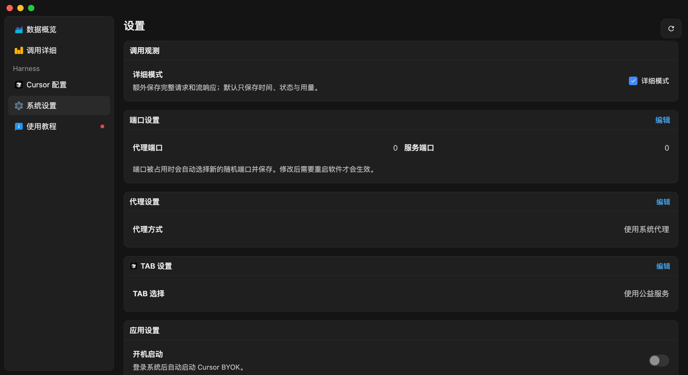

TAB 服务
选择 Cursor Tab 补全接口的连接方式。Tab 补全不走模型通道，而是由单独的 Tab 服务处理。

当前版本提供的模式
直连（默认）
直接使用你在 Cursor 客户端中登录账号的官方 Tab 服务。适合账号本身有官方额度的用户。青云currsor小助手默认使用该模式。
自定义
自行部署 TAB 服务，然后在 TAB 服务地址 中填入你的服务地址。原接口路径会追加到该地址之后。
本二改版本已移除原作者公益 TAB 服务。模型对话推荐走 青云聚汇；TAB 补全仍建议使用官方直连。
修改 TAB 设置后，建议重启 Cursor 并新开一个对话，确保连接方式生效。